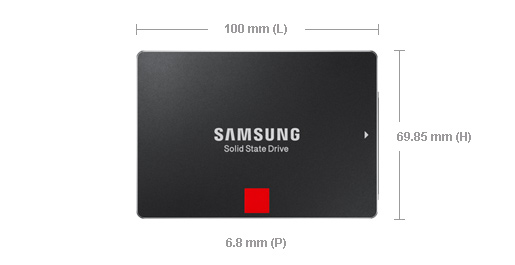
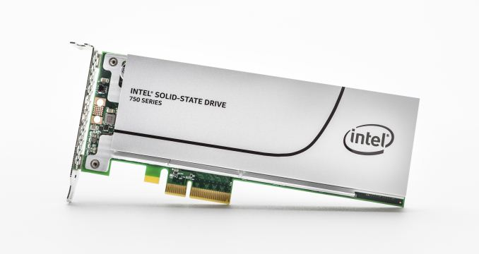
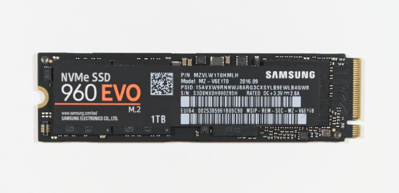
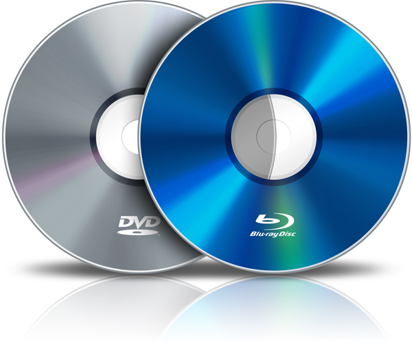
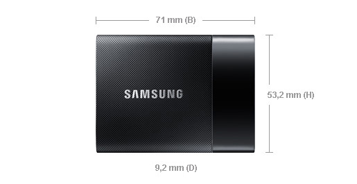
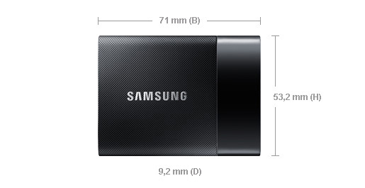
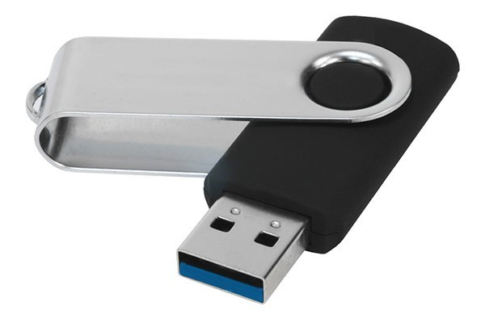
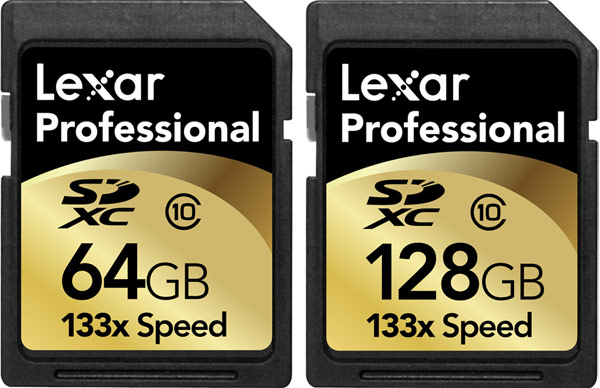
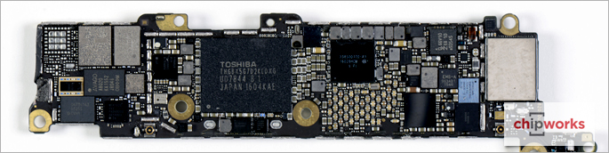

Computer Storage Devices by Justin Liu and Huzaifah Mian is licensed under a Creative Commons Attribution-ShareAlike 4.0 International License .
Hard disk drives, often abbreviated to "HDD" or "hard drive", have been the most common form of consumer data storage for decades. They are relatively long-lasting, and inexpensive per GB of capacity compared to other types of storage. Hard drive platters spin at 5400 to 7200 RPM, alowwing file transfers to be fast enough for the average user. Today, most HDD have capacities over 1TB (1000 GB) and are connected using the SATA (Serial ATA) interface.
  Solid state drives or SSDs are becoming more popular in consumer devices. For example, all recent Apple computers contain an SSD, both an SSD and an HDD, or even a hybrid drive Apple calls the "Fusion Drive". The technologies in SSDs allow them to be inherently faster than traditional HDD in almost every way. In addition, they are smaller, quieter, and use less power. SSDs can be designed to use the same SATA interface as HDD, but this can be a speed bottleneck; PCIe and M.2 are emerging interfaces that allow faster speeds. All these benefits come at the cost of durability, however they will last long enough to outlive many other computer components.
While optical discs like CDs (Compact Disc) and DVDs (Digital Video Disc) are still in use today, they are slowly dying due to various issues. Compared to HDDs and video streaming services, optical discs are not competitive due to their low speeds and capacities. However, innovations like BluRay are a refresh to the possibly obsolete optical disks.
BluRay uses slightly different technology compared to CDs and DVDs. This allows BluRay to have higher data capacity and speeds, making it popular for high definition movies.
 

As HDD and SSD technology develops, storage devices have been shrinking in physical size. This led to portable HDDs and SSDs with all the same characteristics, but now in a portable form factor. As with standard storage, HDDs have a larger capacity and SSDs are light and fast.
USB flash drives, sometimes shorted to simply "USB", is a common form of portable storage due to its small size and versatile USB connector. They are widely used in a variety of environments, but most wear out relatively quickly due to poor construction.
Memory cards have been used for years in handheld cameras and smartphones. Today, the most common type of memory card is SD (Secure Digital), with miniSD and microSD variants. They are available in a wide range of sizes and speeds, allowing for consumers to choose the card right for any individual.
Phones have two areas of storage, internal and portable. Similar to SSDs, phone internal storage is made up of flash memory modules; having all the benefits of flash. Portable storage on a phone is usually a swappable and upgradable microSD card, allowing for phone customization. Although most phones allow storage expansion with portable storage, Apple's iPhone does not.